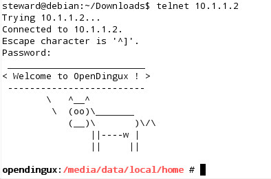

透過USB連接到PC後
$ sudo dmesg
[143586.121681] usb 1-1: new high speed USB device using ehci_hcd and address 4
[143586.278126] usb 1-1: New USB device found, idVendor=0525, idProduct=a4a2
[143586.278128] usb 1-1: New USB device strings: Mfr=1, Product=2, SerialNumber=0
[143586.278130] usb 1-1: Product: RNDIS/Ethernet Gadget
[143586.278132] usb 1-1: Manufacturer: Linux 3.12.0-dingux+ with musb-hdrc
[143586.278199] usb 1-1: configuration #1 chosen from 2 choices
[143586.282835] cdc_subset: probe of 1-1:1.0 failed with error -22
[143586.288051] usb0: register 'cdc_ether' at usb-0000:00:0b.0-1, CDC Ethernet Device, fe:26:28:b2:5a:bf
$ sudo ifconfig usb0 10.1.1.1
$ telnet 10.1.1.2
接著在PC上，使用telnet登入GCW Zero掌機
